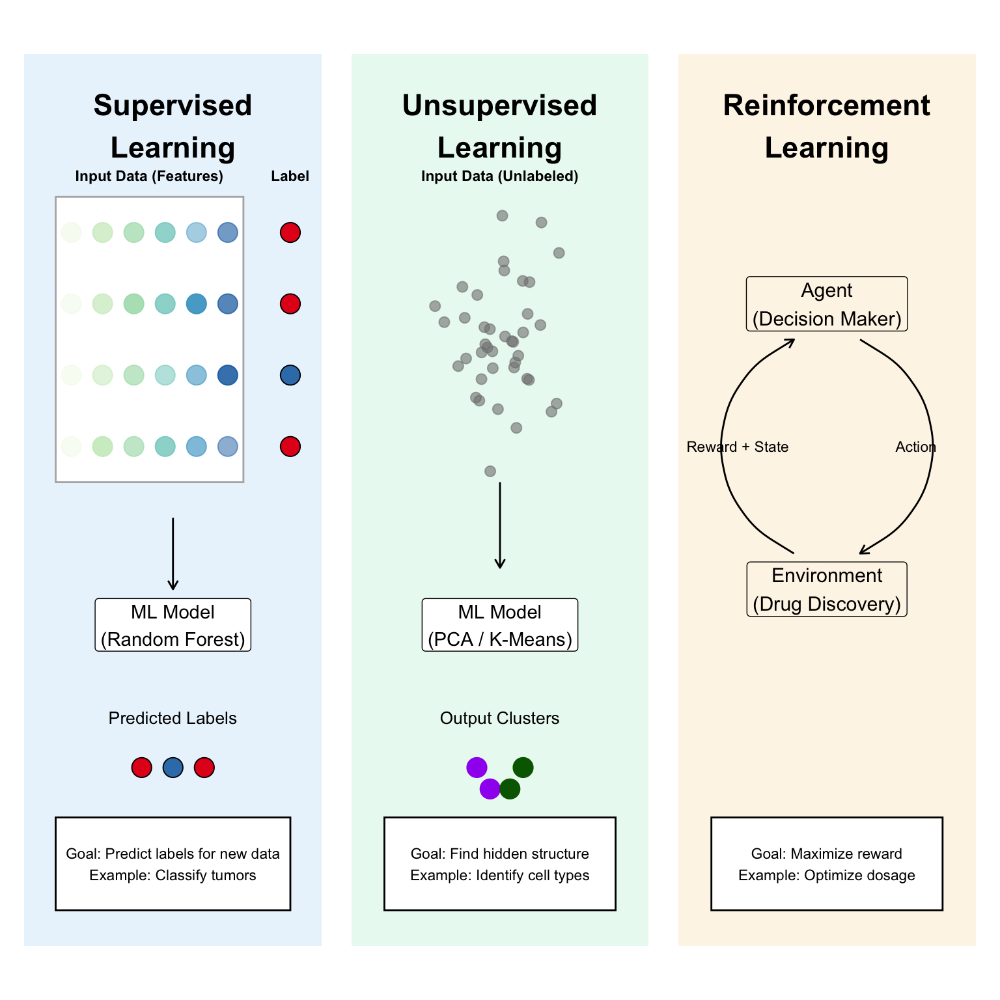

Introduction
As researchers in the biological sciences, we are often swimming in high-dimensional data—whether it is proteomics, genomics, transcriptomics, single-cell sequencing or any other omics. Transitioning from the classical frequentist statistics to a Machine Learning (ML) mindset is a powerful move for any novel biological discovery. ML techniques can help us uncover patterns, make predictions, and gain insights from complex datasets that traditional methods might miss.
In this course, we will explore the fundamentals of Machine Learning with a focus on applications in the biological sciences. We will cover key concepts, algorithms, and practical implementations using R. By the end of this course, you will have a solid understanding of how to apply ML techniques to your own research questions.
What is Machine Learning?
Machine Learning is a field of study within computer science that gives computers the ability to learn without being explicitly programmed to perform specific tasks. Instead of following a set of predefined rules, ML algorithms identify patterns in data and use these patterns to make predictions or decisions. ML was first coined by Arthur Samuel in 1959, who defined it as “the field of study that gives computers the ability to learn without being explicitly programmed.” Even though ML has been around for decades, it has gained significant traction in recent years due to advancements in computational power, the availability of large datasets, and improvements in algorithms. ML uses statistical techniques to enable computers to improve their performance on a specific task over time as they are exposed to more data (Figure 1). This is particularly useful in scenarios where traditional programming approaches are impractical or impossible due to the complexity of the data or the task at hand.
Why Machine Learning in Biology?
Biological data is inherently complex and high-dimensional. Traditional univariate statistical methods often fall short in capturing the intricate relationships within such data. Machine Learning offers a suite of tools that can handle this complexity, allowing us to:
- Identify Patterns: ML algorithms can uncover hidden patterns in large datasets that may not be apparent through traditional analysis.
- Make Predictions: ML models can predict outcomes based on input data, which is invaluable for tasks such as disease diagnosis, treatment response prediction, and more.
- Automate Analysis: ML can automate the analysis of large datasets, saving time and resources.
- Integrate Diverse Data Types: ML techniques can integrate various data types (e.g., genomic, proteomic, clinical) to provide a holistic view of biological systems.
By leveraging Machine Learning, we can enhance our ability to make sense of complex biological data and drive novel discoveries in the life sciences.
Course Structure
This course is structured into several modules, each focusing on different aspects of Machine Learning:
- Supervised Learning: Techniques where the model is trained on labeled data to make predictions.
- Unsupervised Learning: Methods for discovering patterns in unlabeled data.
- Deep Learning: An introduction to neural networks and their applications in biology.
- Model Evaluation: Strategies for assessing the performance of ML models.
Each module will include theoretical concepts, practical examples, and hands-on exercises using R. We will also explore real-world biological datasets to illustrate the application of ML techniques in research.
Types of Machine Learning
Machine Learning can be broadly categorized into three main types: Supervised Learning, Unsupervised Learning, and Reinforcement Learning, as depicted in Figure 2. In this course, we will focus primarily on the first two types, as they are most relevant to biological data analysis.
- Supervised Learning: In supervised learning, the model is trained on a labeled dataset, meaning that each input data point is paired with a corresponding output label. The goal is for the model to learn the mapping from inputs to outputs so that it can make accurate predictions on new, unseen data. Common algorithms include decision trees, support vector machines, and neural networks. Applications in biology include disease classification based on gene expression profiles and predicting protein functions. We will explore various supervised learning techniques in detail in ?@sec-ml-supervised.
- Unsupervised Learning: Unsupervised learning involves training models on unlabeled data to identify inherent patterns or structures within the data. The model learns to group similar data points together or to reduce the dimensionality of the data for easier visualization and analysis. Common techniques include clustering algorithms (like k-means and hierarchical clustering) and dimensionality reduction methods (like PCA and t-SNE). In biology, unsupervised learning can be used for tasks such as identifying cell types in single-cell RNA sequencing data or discovering subtypes of diseases based on molecular profiles. We will cover unsupervised learning methods in detail in ?@sec-ml-unsupervised.
- Reinforcement Learning: Although not the focus of this course, reinforcement learning is another type of ML where an agent learns to make decisions by taking actions in an environment to maximize cumulative rewards. This approach is less commonly used in biological data analysis but has potential applications in areas like drug discovery and personalized medicine.

Methodological Challenges in Biological Machine Learning
While Machine Learning offers powerful tools for biological data analysis, several methodological challenges must be addressed to ensure robust and meaningful results. Below, we outline some of the key challenges specific to the application of ML in biology.
Data Quality and Preprocessing
Biological datasets often suffer from issues such as missing values, batch effects, and technical variability. Proper data preprocessing is crucial to mitigate these issues.
Normalization and Scaling: Techniques such as log transformation, z-score normalization, and batch effect correction (e.g., ComBat) are essential to ensure that the data is comparable across samples and conditions.
Feature Selection: Given the high dimensionality of biological data, selecting relevant features (e.g., genes, proteins) is critical to reduce noise and improve model performance. Methods such as variance thresholding, recursive feature elimination, and domain knowledge-based selection can be employed.
The “Curse of Dimensionality” and Data Scarcity
In computational biology, we frequently encounter the \(p \gg n\) problem, where the number of features (genes/ transcripts/ proteins/ metabolites) vastly exceeds the number of observations (biological replicates/ individuals).
Dimensionality Concerns: As the feature space expands, the volume of the space increases so rapidly that the available data becomes sparse. This sparsity makes it mathematically trivial to find a separating hyperplane that appears significant but lacks biological reality. Often, models trained in such high-dimensional spaces will perform well on training data but fail to generalize to new samples.
Quality Constraints: Biological data is inherently noisy, susceptible to batch effects, and expensive to generate. Models trained on insufficient or poorly normalized data will inevitably reflect technical artifacts rather than true physiological signals. Moreover, the limited sample sizes typical in biological studies exacerbate the risk of spurious correlations.
Overfitting and Generalization Error
Overfitting represents the most significant threat to the transition from computational predictions to biological insights. Overfitting occurs when a model possesses excessive degrees of freedom, allowing it to interpolate the stochastic noise within the training set rather than capturing the underlying biological manifold. In high-dimensional transcriptomics, where \(p \gg n\), the risk of “memorizing” the training data is exceptionally high. Obviously, this is a critical issue in most of the biological discoveries, where the goal is to identify features that are predictive across diverse populations.
The Statistical Mechanism: In high-dimensional spaces, points are naturally isolated, we say that the data is sparse. A complex algorithm, such as an unpruned Decision Tree or a high-capacity Support Vector Machine, can easily construct a decision boundary that achieves zero training error by isolating these specific coordinates. However, such a boundary is unlikely to represent the true population distribution, leading to a precipitous drop in performance when applied to independent validation cohorts.
Regularization and Constraint: To mitigate this, we must introduce penalization terms—such as the \(L_1\) (Lasso) or \(L_2\) (Ridge) norms—which mathematically constrain the coefficient weights, effectively “shrinking” less informative features to zero. This enforces a simpler model architecture that prioritizes broad biological trends over sample-specific idiosyncrasies. We will explore these techniques in detail in ?@sec-regularization.
Rigorous Validation Frameworks: The antidote to overfitting is a robust validation architecture. This involves the strict separation of data into training, testing, and ideally, completely independent external validation sets. Different cross-validation strategies (e.g., k-fold, stratified) should be employed to ensure that the model’s performance metrics (e.g., accuracy, AUC-ROC) reflect its ability to generalize beyond the training data. We will discuss these strategies in detail in ?@sec-ml-eval.
The Biological Cost of High Variance: From a translational perspective, an overfitted model produces “phantom biomarkers.” These are genes that appear statistically significant due to technical artifacts (e.g., batch effects or library prep variance) but fail to replicate in follow-up experiments. Identifying these errors early via ML validation saves significant time and capital that would otherwise be spent on futile in vitro or in vivo validation.
The Interpretability-Complexity Paradigm
The application of Machine Learning in omics often forces a trade-off between a model’s predictive capacity and its interpretability. While high-capacity models—such as Gradient Boosted Trees, Random Forests, or Deep Neural Networks—can capture complex, non-linear gene-gene interactions, they often function as “black boxes,” providing little intuition regarding the biological phenomena driving the classification.
Mechanistic Transparency vs. Predictive Accuracy: In a clinical research context, the rationale behind a prediction is often as critical as the prediction itself. A model that achieves high AUC (Area Under the Curve) but lacks transparency cannot be used to generate new biological hypotheses or inform therapeutic interventions. To bridge this gap, we employ explainable AI (XAI) techniques, such as SHAP (SHapley Additive exPlanations) or LIME, which mathematically decompose the contribution of each gene to a specific sample’s prediction.
Strategic Model Selection: The choice of algorithm must be dictated by the research objective. If the goal is pure diagnostic accuracy, ensemble methods are appropriate. However, if the objective is biomarker identification, we must prioritize models with intrinsic feature selection properties (e.g., Sparse Partial Least Squares or Elastic Net). This allows us to map mathematical importance back to biological relevance—transforming “important features” into actionable “biomarkers” that can be validated via pathway enrichment or Gene Ontology (GO) analysis.
The Burden of Validation: A complex, uninterpretable model is difficult to audit for “leakage” or technical bias. By maintaining interpretability, we ensure that the model is making decisions based on genuine biological signal (e.g., the upregulation of an oncogenic pathway) rather than a technical artifact (e.g., different RNA extraction kits), thereby increasing the likelihood of successful translation to the wet lab.
Computational Logistics and Scalability
The processing of large-scale omics datasets requires significant memory allocation and optimized algorithmic implementations.
- Infrastructural Demands: Complex architectures, particularly in deep learning or iterative manifold learning (UMAP/t-SNE), necessitate high-performance computing (HPC) environments. Researchers must evaluate the trade-off between algorithmic complexity and the marginal gain in predictive power.
Algorithmic Bias and Ethical Validity
The translation of Machine Learning models into clinical diagnostics needs a profound commitment to data diversity and ethical transparency.
Representation Bias: If the training data lacks ancestral or demographic diversity, the resulting selected genes may exhibit reduced efficacy across broader populations, inadvertently perpetuating healthcare disparities.
Accountability: The use of automated decision-making in healthcare requires rigorous auditing of the training pipeline to ensure that confounding variables (e.g., age, sex, or technical batch) are not driving the model’s classification.